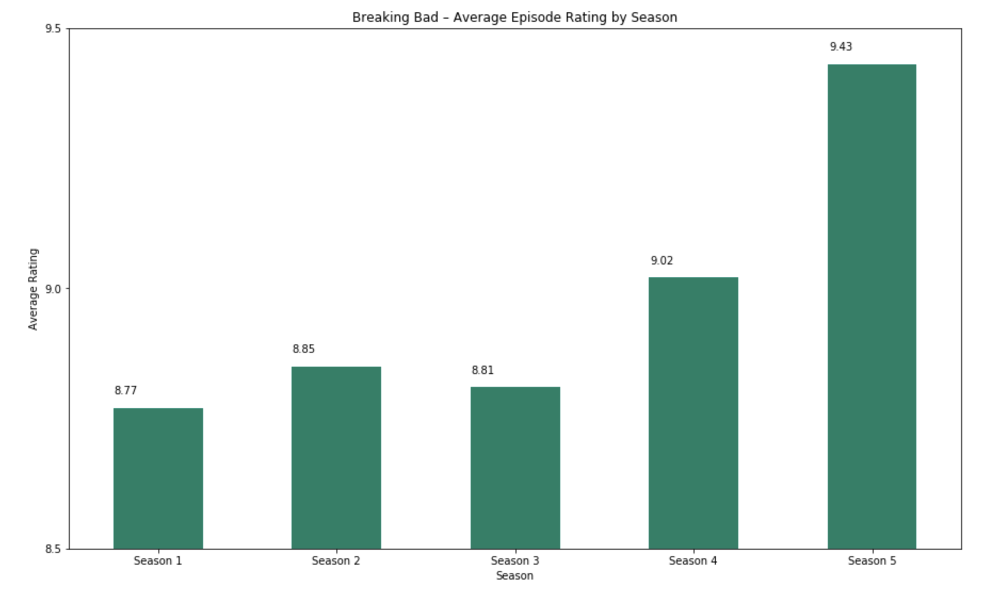
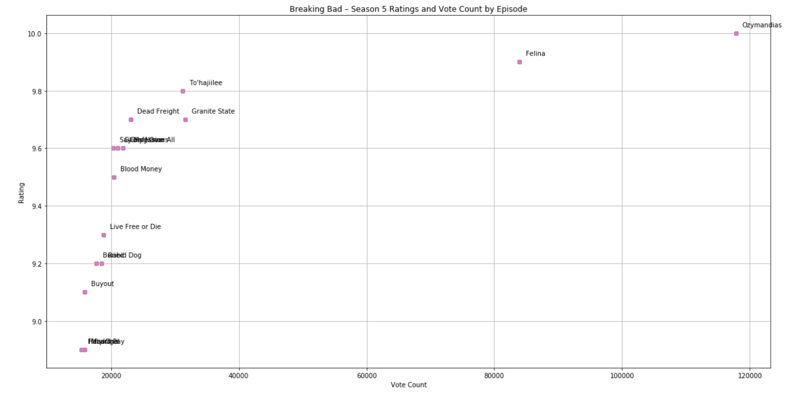

In 2015, my friend suggested a crime drama on Netflix about a high school chemistry teacher who starts cooking and selling crystal meth with a former student to afford his chemotherapy bills. I had no idea this show would become my favorite 62 episodes of television to ever air. In fact, I respect this show so much that I have gone back and rewatched it once every year since. Breaking Bad is undeniably one of the most critically acclaimed television shows in history. Everybody knows this, and everybody accepts this. Since there’s no point in debating that fact, I would rather explore the argument that the last season of Breaking Bad is its best season of the show. Notable aspects of the last season in specific include the continuous tense atmosphere and the perfectly built-up and executed shocking plot moments.
To prove this argument, I believe looking at ratings is a good way to start. I used a Kaggle dataset containing information scraped from IMDb such as season number, episode title, air date, the IMDb episode rating, number of votes cast, and description of the episode. I began by averaging the ratings of each episode per season to get a season average. Below is the graph that displays how well each season’s episodes were rated on average.

Immediately when looking at the graph, season 5 sticks out for having a considerably higher average rating compared to the other four seasons. We can look at a breakdown of the episodes of season 5, and look at each episode’s average rating individually.

According to the vote count of this dataset, season 5 episode 14, otherwise known as “Ozymandias”, has a perfect score of 10.0 with 117,795 ratings from IMDb users. To put it in perspective, the next episode to have a perfect score only has about 200 total ratings. This episode is famous for being the highest-rated television episode ever and speaks directly for the quality of the show’s final season.
It’s important to note that “best” seasons and episodes also include subjective opinions that numeric 1-10 ratings can’t always capture. My personal favorite episode, season 3 episode 10, only has an average rating of 7.8 with 22,410 ratings. Most people hate this episode because it’s pointless and contributes nothing to the plot (if you know, you know) however I ended up really enjoying it. Ratings are important to all forms of media in a general sense, but in the end, what really matters–your opinion, or the opinions of strangers?
Breaking Bad is known for having one of those fabled “perfect endings” that come very rarely in television. Season 5’s astounding ratings back this claim up and definitely make the case for how perfect the last season is one of the most respected parts of modern media to date. 100k+ IMDb reviews with a 10.0 average score for Ozymandias, the third to last episode of the show, is incredibly impressive in and of itself. Complete with incredible attention to detail, satisfying character arcs, and perfect pacing, season 5 of Breaking Bad earns its average of 9.43/10. If you haven’t seen Breaking Bad yet and still aren’t convinced why you should watch it check out, here are five reasons why you should press play right now.